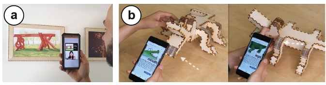

Publication
Mustafa Doga Dogan, Vivian Hsinyueh Chan, Richard Qi, Grace Tang, Thijs Roumen, Stefanie Mueller
StructCode: Leveraging Fabrication Artifacts to Store Data in Laser-Cut Objects.
In Proceedings of
ACM UIST '23. DOIPDFVideoTalk
Videos
StructCode: Leveraging Fabrication Artifacts to Store Data in Laser-Cut Objects
A room with different objects: a painting frame that says "augment with narration, file folders that say "label individually", a bookshelf that says "provide disassembly instructions", a plant pot that says "keep track and update", and a chair that says " find online and fabricate." A user is holding a phone that says "Plant: kalanchoe", indicating the watering times. Two callouts show zoomed-in views of the living hinge of the pot and the finger joints of the chair top. Different bits (0s, 1s, 2s) are shown on these callouts.
Figure 1:StructCode embeds data in the fabrication artifacts of laser-cut objects, such as the patterns of (a) finger joints and (b) living hinges, to augment objects with data. Here, the embedded StructCodes allow narration for a painting and status updates for a potted plant, among others.
We introduce StructCode, a technique to store machine-readable data in laser-cut objects using their fabrication artifacts. StructCode modifies the lengths of laser-cut finger joints and/or living hinges to represent bits of information without introducing additional parts or materials. We demonstrate StructCode through use cases for augmenting laser-cut objects with data such as labels, instructions, and narration. We present and evaluate a tag decoding pipeline that is robust to various backgrounds, viewing angles, and wood types. In our mechanical evaluation, we show that StructCodes preserve the structural integrity of laser-cut objects.
INTRODUCTION
Attached to objects for identification, tags are an important part of our everyday lives and used for many applications in packaging [Wang et al. 2016], shipping [Schmitz et al. 2018], robotics [Zhao et al. 2009], and manufacturing [Rivers et al. 2012]. Tagging 3D objects without electronics [Yamaoka et al. 2019] usually involves sticking 1D barcodes and QR codes onto them [Holmquist 2006] or carving, printing, or engraving the code patterns directly onto their surfaces [Matusik and Konakovic Lukovic 2023; Ozdemir and Doubrovski 2023; Song et al. 2018]. Even though these approaches are relatively low-cost, the barcodes may take away the attention from the physical object itself due to its obtrusiveness, and are typically not as durable as other tags like RFID [McCathie 2004; Omron 2015].
To achieve unobtrusive passive tags that do not require object modification, researchers investigated ways to use the inherent characteristics of objects, which may manifest in the form of either naturally occurring or engineered features. As an example of natural unobtrusive tags, SensiCut [Dogan et al. 2021] senses the micron-scale surface structure of materials using speckle sensing to identify the material's type. Similarly, Verifiable Smart Packaging [Wang et al. 2016] uses radio-frequency signals that penetrate through an object's exterior to identify the object by its internal structure. The second approach, engineered unobtrusive tags, offers more flexibility to define how the tag should by embedded with the object. For example, in agriculture, researchers developed tamper-evident tags using biodegradable silk particles, allowing for seed traceability and anti-counterfeiting [Sun et al. 2023]. In 3D printing, G-ID [Dogan et al. 2020] uses the patterns that appear as a byproduct of the slicing process as unobtrusive tags. However, it is only possible to embed an identifier, and not a custom array with multiple characters. Thus, users are unable to add data represented in character arrays.
In this paper, the question that prompted our research was: Can we make use of existing fabrication artifacts of objects to store metadata in them? Our goal is two-fold: (1) not introducing additional materials, parts, or features to the object, but simply make use of its existing visual structures that arise as a byproduct of the fabrication process. (2) The added data should be decoded from regular camera images so the meta-information can be easily used to augment the objects, e.g., in augmented reality (AR) applications.
Our proposed solution, StructCode, slightly varies fabrication artifacts, i.e., the patterns resulting from joints, which does not change the main object geometry, but can still be detected from camera images. Thus, StructCode does not add any new features to the object, but instead exploits the structures that are inevitable artifacts of the fabrication process. While this idea can be applied using many different manufacturing processes and materials that allow for the customization of individual tangibles (to embed individual tags), for the scope of this project we focus on laser cutting. Laser cutting is particularly suitable because it allows the rapid fabrication of sturdy, functional, and large-scale objects [Baudisch et al. 2019; Dogan et al. 2021]. These typically contain many visual artifacts across their surfaces due to their finger joints and living hinges. StructCode subtly changes the widths of these elements to represent machine-readable information. The StructCodes can be read as part of existing AR pipelines to augment the user's view with information relevant to the tangible objects that they are interacting with.
Figure 1 shows how laser-cut objects use their existing joints to store meta-information, such as labels (e.g., used to retrieve watering updates for the plant), context (e.g., to access the digital model of the chair), disassembly instructions (e.g., to recycle the bookshelf), and narration (e.g., explanatory video for the artwork on the wall). StructCode achieves this by modifying the lengths of laser-cut finger joints and living hinges, which are inherent artifacts of commonly laser-cut objects. The modified lengths represent different bits while ensuring the codes are easy to capture with a mobile camera. Because StructCodes are an inherent part of the objects, they cannot be easily removed without causing damage to the object. Compared to other unobtrusive tagging methods in HCI, which use additional equipment such as infrared cameras [Dogan et al. 2022b; Willis and Wilson 2013], StructCode only requires a conventional RGB camera for detection, and thus can be used on off-the-shelf mobile devices and headsets.
While this paper demonstrates the idea of opportunistic data embedding for the example of laser-cut objects, we discuss how it can be generalized to other types of fabricated objects in the future in Section 9. Our contributions can be listed as follows:
An unobtrusive and integrated tagging method that embeds data in the existing fabrication artifacts of objects, as demonstrated for laser cutting, and only requires a standard camera for detection.
A tag decoding pipeline that is robust to various backgrounds, viewing angles, and wood types.
A set of applications showing how this opportunistic embedding can enrich tangible interactions with laser-cut objects.
A mechanical evaluation illustrating that the addition of StructCodes maintains the overall integrity of objects.
RELATED WORK
Embedding metadata, hyperlinks, and related documentation within the physical world can provide meaningful contextualization and allows for sharing of information [Ettehadi et al. 2021]. This has been explored for photographs [Tancik et al. 2020], font characters [Xiao et al. 2018], charts [Fu et al. 2021], documents [Dogan et al. 2023b; Want et al. 1999], and textiles [Zhu et al. 2023]. In this section, we review different types of tags for three-dimensional physical objects specifically and categorize the approaches based on where the tag is located on the object, how much data it can store, and how complex the associated fabrication and detection processes are. Table 1 summarizes the capabilities of StructCodes in the context of previous works.
Table 1:Comparison of previous approaches, including (a) surface and (b) interior tag embedding, to (c) StructCodes.
location
(a) surface
(b) interior
(a) surface +
(b) interior
(c) structure
LayerCode
(visual)
LayerCode
(NIR-based)
Seedmarkers
ObjGen
AirCode
InfraStructs
InfraredTags
G-ID
StructCodes
Fabrication
method
3D printing
3D printing
3D printing or
laser cutting
laser cutting
3D printing
3D printing
3D printing
3D printing
laser cutting
No new feature
additions necessary?
add differently
colored layers
add visual blobs
engrave
visual barcodes
insert air gaps
insert
air gaps
insert tag of
different material
Accessible and
easy fabrication
needs modified
SLA printer
object needs to be
partitioned and
printed separately
support material
inside needs to
be washed away
multi-material
printing with
IR-PLA
Carries data?
(code capacity)
used for
ID only
used for
ID only
Multiple codes
on the same
object possible?
1 tag per object
1 tag per object
1 tag per
object
Can use existing
RGB cameras on
phones/headsets?
needs to be read
under sunlight
with a NIR filter
needs a
projector
needs
Terahertz
scanner
needs
IR camera
needs a light
source in contact
with the object
EMBEDDING DATA IN STRUCTCODES
In this section, we discuss how to physically embed the code into existing laser-cut structures and which encoding scheme we use for StructCodes. Our goal is to be able to store custom text (e.g., sentences or website URLs).
3.1 Identifying Features Suitable for StructCodes
To better understand how to embed information in laser-cut objects artifacts, we surveyed what joints are used in their structure and which of these are suitable to be leveraged as a StructCode. We considered the top 100 laser cutting projects on the popular online repository Instructables1 and classified the identified joints in objects. If an object contained more than one joint type, we took into account all of them.
In total, 58% of projects had at least one type of joint. We found four main types of joints contained in the laser-cut objects: finger joints (26%), mortise and tenon joints (16%), slot joints (8%), and living hinges (8%). We count living hinges as a type of joint because under joints, we consider any connection between two planes in the laser-cut model. These joint types can also be commonly found in the research community, e.g., finger joints in Enclosed [Weichel et al. 2013], CutCAD [Heller et al. 2018], and Fresh Press Modeler [Chen and Sass 2016], slot joints in FlatFitFab [McCrae et al. 2014], SketchChair [Saul et al. 2010], and Planar Pieces [Schwartzburg and Pauly 2013].
Out of these four joint types, we identify finger joints and living hinges as most suitable for illustrating the concept of StructCodes. Both contain repeating elements, i.e., finger joints have individual fingers repeated along the edges of a plate and living hinges are made up of repeated individual lines. They are both on the outside surface of the object, i.e., visible to the camera. Living hinges form a well-defined shape that can be tightly enclosed by a bounding rectangle. While finger joints can also be applied to non-rectangular parts, they are most common on rectangular shapes (73.1% of the joint projects had joints on rectangular plates). Both structures offer large encoding capacity; particularly, living hinges have many line cuts that could be used as bits.
3.2 Structural Embedding of Data Bits
As shown in Figure 3, the identified structures typically contain material interleaved with cuts, i.e., gaps. For instance, in finger joints, the fingers are interleaved with cut outs that match the fingers of the neighboring plate, and in living hinges, the sheet is cut at specific distances to make the material bendable.
To encode a message, we can either vary the length of the material (fingers of joints or links of hinges) or the length of the gaps between the fingers or between the links. Below we outline how we embed the codes for each of the two structural element types.
(a) A box with finger joints on its edges. A zoom out showing the gaps and fingers in these joints, with their widths marked. (b) A box with a living hinge on one of its sides. The links between the hinge cuts are marked.
Figure 3:General design of (a) finger joints and (b) living hinges. To embed bits, we resize both the fingers and gaps in the finger joints, but only the links in the living hinges.
Finger joints. To embed StructCodes into finger joints, we modify both the widths of the individual fingers and the widths of the gaps between the fingers, as labeled in Figure 3 a (i.e., d1, d2, d3,...). We did not consider modifying the depth of the fingers because the depth has to be the same as the sheet thickness to ensure properly interlocking plates. To maintain the structural integrity of the joints, modifications to the widths of the elements (i.e., fingers or gaps) should be minimized to be as close to the original width as possible while being distinguishable by the camera and distributing evenly over the plate length (see Section 6.1).
Living hinges. There are two ways to embed StructCodes into living hinges, either by modifying the size of the individual links, the widths of the hinge gaps (i.e., the vertical cuts between the links), or both as shown in Figure 3 b. To ensure that the hinge can be bent into the desired curved configuration after laser cutting, the links have to be vertically aligned. Therefore, we only modify the lengths of the links. Furthermore, since the links are typically shorter than the gaps, they are less prone to warping when comparing the lengths against each other and thus more suitable for our purposes. This is because the links are situated in a smaller local region, which allows the projection to the image plane to maintain the ratio of distances [Maia et al. 2019]. To ensure the structural integrity, we chose lengths that are as close to the original as possible while being distinguishable by the camera (see Section 6.2).
3.3 Encoding Scheme
StructCode employs a base 3 (ternary) encoding scheme2, i.e., it uses the bits 0, 1, and 2. This is represented in the physical code as a narrower element ("0"), a medium element ("1"), and a wider element ("2"). Four elements, i.e., four bits, represent one character. The different combinations of element widths that make up the four bits can generate up to 81 different variations, which allows to embed 81 different character types, including 62 alphanumeric characters and 18 special characters for strings that can include URLs. The remaining bit combination is used as the start/end sequence, which is asymmetric ("0120"). This allows us to identify where the code starts and thus helps to find the location in the captured image where we need to begin decoding. In addition, since the start/end sequence contains the 0, 1, and 2 bits, it makes it easier for us to detect the widths of the narrow, medium, and wide elements. We chose the base 3 encoding scheme rather than a base 2 scheme (only 0 and 1, such as in conventional barcodes) as it allows us to increase the amount of information we can embed in the same number of elements. We did not go up to base 4 or higher in order not to sacrifice subtlety (Section 9). If a bit string is relatively short and the plate or hinge has a large area, our tool automatically repeats the string throughout the structure to achieve a more even look.
Finger joints. The bit sequence is encoded in a circular fashion beginning at one of the four corners of a rectangular plate so that it covers its whole perimeter. When investigating the average number of joints used in rectangular plates on Instructables, we found that the ones that have joints on all four sides had on average a total of 50.3 fingers and gaps (std=33.6). By varying both the finger and the gap, this allows us to embed 7 characters with a base 2 scheme, or 12 characters with a base 3 scheme, a capacity sufficient to store longer URLs using shortened URLs (similar to regular QR codes). For instance, t.ly/aNPf
with 9 characters is the shorted version of a 39-character kyub link to a 3D model.
Living hinges. A row of columns is encoded from left to right, and an individual column goes top to bottom. As an example, in Figure 3 b, the first column is read from top to bottom (d1, 1, d1, 2, d1, 3), and then the second column is read (d2, 1, d2, 2,...). We found that the average number of links in two-dimensional hinges from the Instructables dataset is 85.7 (std=43.1), excluding the hinges that are completely circular and thus would not fit in a single camera frame. This allows for a data capacity of 21 characters using our base 3 scheme. Thus, we conclude that compared to finger joints, living hinges usually fit longer StructCodes because they have more repeating elements.
END-TO-END WORKFLOW
We next describe how a user can embed StructCodes into their laser cut object. Our workflow is designed to work with laser-cut objects made in the 3D editor kyub [Baudisch et al. 2019] or 2D models (.svg) from other sources imported into kyub using assembler3 [Roumen et al. 2021]. Users import the project from kyub as a 2D file into our Web-based tool to embed StructCodes in it. After fabricating the object in the laser cutter, the user can detect the code using our mobile application.
4.1 User Interface for Embedding StructCodes
Once the user has imported their kyub object into our tool, they click on the Identify compatible structures button in the tool (Figure 4), which marks the jointed plates and hinges that allow embedding codes. In our walkthrough, the user is making a box and the StructCode tool shows that the two rectangular plates of the box and the one with the living hinge can be used to embed a code. It also reminds the designer to choose a structure that is facing towards the user when they take a photo of it. Since the hinge pattern on the top part of the object is most visible, the designer chooses it for the StructCode.
(a) A software user interface showing a 2D cutting file, which has several plates. The joints and living hinge are marked. A popup window has "Red Oak" entered into its text box. (b) A mobile phone pointed at the laser-cut box, the application shows the message "Red Oak".
Figure 4:Workflow for encoding and decoding information. (a) After the tool highlights the compatible structures, the user selects the hinge and encodes "Red Oak". (b) They use the StructCode mobile application to decode the message.
Once we select one of the structures, the tool shows how many characters can be embedded in it based on its number of joints or lines in the hinge pattern, e.g., that the selected hinge can embed up to 15 characters in it. In this example, we want to embed a StructCode that can later help us identify which material the object was laser cut from, i.e., red oak plywood. We type in "Red Oak" which is within our character limit (Figure 4 a) and as a result, the tool modifies the hinge cuts. After embedding this code, users have the option to also add more codes into the other structural elements of the object. In our case, we do not need to embed additional messages, so we leave all other structural elements as they are.
Finally, the user exports the laser-cut design with the embedded StructCodes as an SVG file and send it to the laser cutter's software. After fabrication, the user assembles the parts using the instructions generated by kyub. Our tool preserves the plate numbers from kyub to facilitate the assembly process.
Mobile Interface for Reading StructCodes
The StructCode mobile application is used for decoding data embedded in objects. To do so, the user points their phone at the structure as shown in Figure 4 b. The mobile application automatically starts capturing images and processes them to decode the message. After enough images are taken to ensure correct decoding, the app displays the encoded message, i.e., in our case "Red Oak". The decoded information can be used to augment various mobile experiences, which are illustrated in Section 5.
APPLICATIONS
We demonstrate how StructCodes enriches object interactions with data, including identifiers for labels, object context, such as instructions, as well as overlaid media, such as narration.
5.1 Embedding Identifiers for Static or Dynamic Labels
Users can add identifiers to objects which allow static or dynamic labels for the specific use cases of the objects.
Static labels. As shown in Figure 5 a, a set of office folders contain various personal documents (e.g., personal finances or visa documentation) that the owner would rather not have visibly shown. The user embeds a StructCode into the finger joints of the folder's front plates. Thus, the information is only visible to the user in AR and otherwise the folder looks unlabeled. For the most sensitive tags, the mapping of code to label can be encrypted and available to that user only.
Dynamic labels. The embedded identifiers can be also used for dynamic labels, i.e., status updates. In the example shown in Figure 5 b, the designer is creating a plant pot that lets the user pull up an online dashboard to keep track of the plant's health (i.e., watering, trimming the branches, fertilizing). The pot has an identifier embedded into its living hinges as StructCodes. When the designer leaves for vacation, they ask their friends to take care of the plants. StructCode allows the friend to identify the plant and retrieve its recent status, e.g., that it needs to be watered today.
(a) Document folders have embedded labels that are only shown in augmented reality to the user: Finances, Passport, Manuscript 1. (b) A plant pot and a mobile phone showing the label: plant: kalanchoe, and its watering times. (c) A person watering the plant.
Figure 5:(a) Document folders with encoded personal labels, which the user views in AR to retrieve the right one. (b, c) Status updates inform the user about when the plant needs watering.
5.2 Embedding Context: Resources and Instructions
StructCodes allow embedding references to the object's context, such as accessing the digital model, on-demand renewal, and (dis)-assembly instructions.
Accessing the digital model. As shown in Figure 6 a, the laser-cut chair contains a shortened link to its kyub page. Users who see the chair and like the design can scan the StructCode to download its files online and make a copy for themselves.
On-demand renewal. As shown in Figure 6 b, the user reorders cookies by simply capturing its container, which has the reorder link encoded as a StructCode. This allows users to access and renew supplies whenever needed.
(a) A person taking a photo of the chair. The phone screen shows a link, which takes the user to the fabrication page. (b) A user clicking Add to cart button for a cookie on a mobile app, a cookie box is seen in the background of the photo.
Figure 6:Providing context. (a) The user can access the fabrication files of the furniture. (b) Running low on cookies, the user adds a new batch to the online shopping cart through the embedded reorder link.
Assembly / disassembly instructions. Furniture manufacturers such as IKEA provide not only the assembly instructions for their products, but also the disassembly instructions to improve recycling for better sustainability [Allen 2021]. However, users frequently misplace instruction manuals over time. Similarly, for fabricated objects, users may struggle to locate the related instructions that originally came with the digital file. As shown in Figure 7, the owner retrieves the disassembly manual through the StructCode when they need to discard of the piece, or transport and reconstruct it elsewhere.
A bookshelf, whose hinge is linked to a digital document using StructCodes. The document includes disassembly instructions (drawings). By following these instructions, the plates can be disassembled and stacked together into a flat box.
Figure 7:Disassembly instructions are linked to the shelf in case the user needs to take it apart for recycling or transport.
While we showed the use case of StructCodes for linking disassembly instructions, our method can also be integrated into existing systems for helping users with the assembly of laser-cut objects [Abdullah et al. 2021; Park and Baudisch 2022]. For instance, the part numbers could be embedded into individual plates so that our app guides the user to pick the right one in each step.
5.3 Embedding Overlaid Media
StructCodes enable users to overlay objects with related media such as narrative videos or illustrations using AR.
Narrative media. As shown in Figure 8 a, StructCode links a video of the original artist narrating their artwork. Using StructCode, students quickly set up a temporary gallery by laser cutting wooden frames for their own works. Visitors can use their phones to view the art in AR, which overlays the video on the related artwork. The app can tailor the content and duration to the individual viewer's level of interest.

(a) A person looking at two painting frames and holding a phone. The phone's AR view shows two play buttons. (b) A related video playing on the phone.
Figure 8:Overlaying media. (a) In an exhibit, visitors use an AR app to view narrative videos by the artists. (b) The crocodile has StructCodes that describe what part they are located on, which is used for educational applications.
Illustrative sublabels. Individual parts of an object can have different functions. StructCodes are used to associate relevant information with each part using illustrative sublabels. One example of this is the educational toy model shown in Figure 8 b that has different sublabels embedded into different limbs of the crocodile. Thus, users access educational materials for each limb. This allows teachers to interactively introduce new concepts in classrooms. For such use cases, we expect that users are made aware of the existence of StructCodes through the toy description or manual.
DETECTION OF STRUCTCODES
The image processing pipeline of StructCodes is implemented using OpenCV [Bradski 2000]. As shown in Figure 9, StructCodes are detected by locating the structure of interest, detecting the modifications in it to extract the bits, and finally decoding the message.
This section describes the decoding pipeline for finger joints and living hinges, which use slightly different image processing techniques. If the user selects what type of feature to decode when launching the application, StructCodes can run the corresponding pipeline directly on the phone's processor. However, running both pipelines at the same time requires higher processing power and is thus recommended to run on a server, which in our applications takes less than a second. We implemented both standalone phone detection for simpler applications and the server-based approach for other use cases for which joints and hinges are expected to be identified at the same time.
6.1 Detection of Finger Joints
We explain the steps to read the code from the raw image of the finger joints as shown in Figure 9 a.
The individual image processing steps for finger joints and living hinges. First, the image is converted to black and white, then the structures are found and isolated. The individual parts of the structures are measured to decode the bits and read the embedded message.
Figure 9:Image processing steps for (a) finger joints and (b) living hinges.
Isolate the plate of interest. StructCode's finger joint detection pipeline starts by grouping the pixels using k-means based on each pixel's HSV values. This creates multiple black and white masks such that a plate of interest is white in at least one of the masks. It runs this process for k=3, 6, 10. It creates a different mask for each k, k (i.e., a total of 3+6+10 masks). The algorithm then applies a morphological opening on each mask to disconnect the plates from the background. It takes the larger rectangles found over all masks (with a padding of 25% to account for any error margin) and applies a 4-point perspective transformation to isolate the plate.
Correct for perspective. The next step in the pipeline applies Gaussian blur to reduce noise and use Otsu's thresholding to turn the gaps between fingers into contours. For each edge of a plate, it samples points on the gaps contours, and draws a line of best fit through the points closest to the center, rather than using the details closer to the sides. This allows the the algorithm to segment the interior plate even if the background has a similar color. It uses these four fitted lines to find the bounding quadrilateral for the plate interior. It then applies another perspective warp that maps the four corners of the quadrilateral to an axis-aligned rectangle. And finally, it slightly extends the bounding rectangle to include the fingers but exclude the background.
Decode the message. The gaps of interest are the white rectangles in the final image, and the width of the fingers can be calculated by the distance between consecutive gaps along each edge. The pipeline then runs k-means with k=3 to classify the gap and finger lengths as 0, 1, or 2 bits. It converts the entire ternary string into characters by grouping bits into blocks of 4. To identify the correct reading direction irrespective of the plate orientation, the start/end sequence, which has an asymmetric order (i.e., "0120", see Section 3) is detected from one of the corners and used as an anchor.
6.2 Detection of Living Hinges
We next explain the pipeline to detect living hinges, as demonstrated in Figure 9 b.
Identify individual hinge gaps. The first step of the pipeline uses adaptive thresholding to turn the image into black and white. A morphological opening and closing are applied to eliminate small isolated patches of black pixel noise. Because the living hinge consists of many thin and long gaps (i.e., the cuts between links) that are parallel and close together, the algorithm searches for thin rectangles in the image. It measures each contour's similarity to a rectangle by comparing its enclosed area to the minimum-area rectangle that contains it.
Group gaps to isolate the hinge. The next step groups rectangles based on proximity, as living hinges consist of many parallel nearby gaps with similar dimensions and orientation. For this, it creates a graph with edges between similar rectangles and find the bounding boxes around the largest connected components. For each bounding box, it applies a 4-point perspective transform and crop out the rest so that the hinge is axis-aligned and takes up the whole image.
Sort the gaps. This step removes noise due to the side joints via morphological opening, resizes the image to thicken the rectangular gaps, and iterates through the gaps to assign them to rows and columns by their coordinates.
Decode the message. Since every row of gaps is determined, the final step calculates the position and lengths of the links (i.e., the bits) by measuring the distances between the gaps within each row. It scans the links from top to bottom, where it groups each link together with the previous link that has approximately equal x-coordinate. StructCode runs k-means with k=3 to classify each link length as a 0, 1, or 2 bit. The entire ternary string is then converted into characters by grouping bits into blocks of 4. The correct reading direction is determined by identifying the start/end sequence 0120.
6.3 Evaluation of the Detection Pipelines
We evaluated what the smallest detectable length difference d is between individual bit categories (0, 1, or 2) when processing the camera images with our detection pipeline. If 0 is represented by distance d, then 1 is represented by d + d, and 2 is represented by d + 2d. Our goal is to only use the smallest possible length difference d to maintain the mechanical integrity of the object.
The smallest possible length difference d is related to the length of the captured joint plate wplate and the camera distance since larger plates require the the camera to be held further to capture all features (joints or hinge links), which results in them appearing smaller in the image. Further, in certain applications, the user may want to identify more than one object at the same time and hold the phone further away, thus differences may become even subtler. We formalize this relationship as dmin=wplate, where is the camera distance scaling factor and wplate is the longest plate dimension or the longest dimension in the bounding box around living hinge regions.
To obtain a conservative bound for , we conduct the following test in our workshop (80-150 lux), which is in line with regular indoor lighting conditions [Observatory 2016]. We first cut multiple joint plates of a fixed size (15cm x 10cm, from the folder application in Section 5.1) with 6 different values with increments of 5 (from = 75 to = 100), which corresponds to a range of 1.5-2mm for d. Next, we captured the plate with a phone (12.2MP on Pixel 2) and downscaled the images to 2048x1536 for fast processing. To ensure that at least two objects can be identified from a single image as shown in the use cases, we held the camera far enough (45cm) so that at least three plates can fit into the frame.
We then ran our image processing pipeline on the resulting images and found that it was able to distinguish between bits with < = 80. Thus, with the given , a 15x10 cm plate requires a difference d = 1.88 mm, allowing up to 26 fingers, which can store up to 14 characters. By contrast, a larger plate of 20x20 cm (60 fingers) can store up to 31 characters but requires a larger difference d = 2.5 mm since the camera has to be held further away.
We repeated this experiment for living hinges. We first cut multiple copies of a hinge (5cm x 3.7cm, the model from Section 4.1), with 6 different values with increments of 5 (from = 25 to = 50), which corresponds to a range of 1-2mm for d. We held the camera at a distance far enough (20.7cm) so that at least three of these hinges can be detected from the captured shot.
The processing pipeline managed to distinguish between bits with < = 45. Thus, with the given , a hinge of a size of 5 cm x 3.7 cm requires a difference d = 1.11 mm, resulting in 72 hinge cuts in the area, which can store up to 9 characters. In contrast, a larger hinge of 10 cm x 7.4 cm (193 cuts) can store up to 36 characters but requires a larger difference d = 2.22 mm since the camera has to be held further away.
6.3.1 Evaluation of the viewing angle: Using the above results, we evaluated the maximum camera capture angle at which the message can still be decoded relative to the plate normal. To do this, we fixed the model with finger joints on a surface and rotated the camera around the plate of interest until the code is no longer detectable, while keeping track of the angle using a protractor attached onto the surface. We did this for three different codes (Figure 5) and three different backgrounds (black, white, wood). The maximum viewing angle was 25.28 (std=2.81) across the nine resulting conditions. When repeated with the living hinge samples, we found that the maximum angle was 37.19 (std=4.52) around the axis perpendicular to the hinge gaps (y-axis in Figure 9 b), and 19.08 (std=2.95) around the axis along the gaps (x-axis) across the nine conditions. The reason the second value is smaller is that due to the curvature, the outermost gaps become more easily occluded with deviations away from the center.
6.3.2 Evaluation of hinge curvature. For reliable detection, we need to ensure that different bits can be correctly distinguished even though their lengths may be distorted as a result of hinge curvature. For instance, the more curved an (outward) hinge is, the more likely it is that a 0 bit at the center of the hinge appears longer than a 0 bit at the edge of the hinge. Figure 10 a shows an exaggerated case of this where the camera is very close the the hinge (4cm). As length is the differentiating factor between bits, this distortion creates a risk of incorrect detection (i.e., mistaking a 0 bit for a 1 bit as a result of length distortion). Based on the pinhole camera model [Sturm 2014], we formalize the condition to avoid this risk using the expression d>d[distedgedistcenter1], where distcenter is the camera distance from the bit at the center and distedge is the camera distance from the bit at the edge. The difference between these distance values is proportional to the curvature. However, since the camera is sufficiently far from the object, we have distcenterdistedge. Thus, in practice the right-hand term is smaller than the d values used.
For instance, for the typical viewing distance of the model evaluated in Section 6.3, we need d>2.1mm[21.3cm20.7cm1] 0.06mm, which is satisfied since the d used is 1.11 mm. This gives enough legroom to ensure correct detection in various conditions, such as different angles as mentioned in the earlier section. Another example is conical hinges (Figure 10 b), here the lines on which the hinge cuts lie have different angles. The legroom allows the detection of the correct measurements, however, the maximum viewing angles reported in Section 6.3.1 are reduced by the angle difference between vcenter and vedge on which the central and the edge cuts lie.
(a) A rotoscope of a hinge distorted by a camera. (b) A conical hinge, which has different cut line angles. (c) A plot of increase in the degree of curvature vs. length distortion.
Figure 10:Curvature of living hinges. (a) As bit lengths may be distorted due to curvature, StructCode encodes them with sufficient tolerance to ensure correct detection. (b) StructCodes can be encoded on various shapes, e.g., conical hinges.
MECHANICAL EVALUATION
When embedding StructCodes, the individual elements of mechanical structures are slightly modified, i.e., the width of the finger joints and the distance between the living hinge cuts are adjusted by multiples of d. To evaluate how much this change affects the mechanical integrity, we conducted several tests with modified finger joints and living hinges.
7.1 Compression Evaluation of Finger Joints
To compare how the addition of StructCodes affects sturdiness, we compared the ultimate compressive strength of box structures before and after embedding the code (i.e., unmodified vs. modified).
Experiment setup. We evaluated two different box sizes because each size results in a different resizing difference d based on the camera scaling factor = 80 for finger joints as explained in Section 6.3. The smaller box, which can carry up to 5 characters, had a plate size of 5cm x 5cm and required a d of 0.625mm. The larger box, which can carry up to 10 characters, had a plate size of 12cm x 12cm and required a d of 1.5mm. The dimensions for the large box were chosen since they represent the largest size that can fit into the measurement machine. We laser cut 4 unmodified and 4 modified boxes of each box size (total of 16 boxes) from 3mm birch plywood sheets. The messages embedded in the modified boxes were produced using a random string generator. Similar to the technical evaluation for kyub [Baudisch et al. 2019], we used a common low-cost material to obtain a conservative lower bound for the sturdiness of the tested objects. All boxes were held together solely press fitting their joints together, i.e., without glue.
Experiment procedure. We used an Instron universal testing machine (UTM) as shown in Figure 11 a. We placed the modified boxes such that the side with the StructCode faced upward. The Instron increased the compression force on the box and we measured the ultimate compression strength to the point where the box failed under crush loading. The ultimate compression strength represents the maximum stress the structure can sustain.
(a) An Instron testing machine compressing a laser-cut box. (b) A hinge being bent by a hand, with a protractor in the background for measuring the bending angle.
Figure 11:Mechanical evaluation of StructCodes: (a) Compressive strength of finger joints and (b) bending of hinges.
Results. We found that the width modification of joints required to embed StructCodes did not strongly affect the sturdiness when compared to the values reported in previous literature. In their tests with kyub objects, Baudisch et al. [Baudisch et al. 2019] have reported that (unmodified) objects were still intact when they exceeded the 500kg (4,903 N) value range of their measuring device. We were able to confirm this as shown in Table 2. Both unmodified and modified objects go well beyond the reported 4,903 N value. Even though the peak load the box can handle decreased on average by 14.5% for the 5cm box and increased on average by 0.16% for the 12cm box after modifying the joints, the force that each of these boxes can withstand is still larger than what is required of most objects used in daily life. The high standard deviation, specifically for the large boxes, is likely due to the fact that there is a large variation in the composition of plywood sheets even though they all came from the same batch.
Table 2:Average peak load comparison of the finger joints.
Unmodified
Modified with
StructCode
Relative change
5 cm
15,939.7 N
(std=621)
13,630.6 N
(std=641)
Decrease by 14.5%
12 cm
12,578.6 N
(std=2,020)
12,599.3 N
(std=1,760)
Increase by 0.16%
7.2 Bending Evaluation of Living Hinges
To evaluate if the introduction of StructCodes into living hinges changes their flexibility, we measured up to what angle the living hinge can bend before fracturing and compared the results for both modified and unmodified living hinges.
Experiment setup. Similar to the setup from Section 7.1, we created 4 pairs of hinges based on the camera scaling factor for living hinges = 45, which was explained in Section 6.3. We repeated this for hinges of two sizes: a smaller one that can carry 10 characters (4.7cm x 3.64cm, d = 1.04mm) and a larger one that can carry 50 characters (12.2cm x 9.6cm, d = 2.71mm). We laser cut the 4 unmodified and 4 modified hinges of each size (16 hinges in total) from 3mm birch plywood sheets. The messages embedded in the modified ones were produced using a random string generator. While different hinge designs may exhibit different flexibility [Fenner 2012], we use the default pattern generated by kyub as this is the tool we used for fabricating our application samples.
Experiment procedure. To evaluate the bending angle, we bent the living hinge pattern either up to 180 (maximum) or up to the point where it started cracking, and then read the corresponding maximum angle from a protractor as shown in Figure 11 b.
Results. For the larger hinge, we found that both the unmodified and modified hinge were able to bend to 180 (Table 3). Thus, the change did not impact the performance. This is likely because the cut distance is not a main factor impacting the maximum hinge bend angle, which is rather directly linked to the the sheet thickness and the number of links in series [Fenner 2012]. For the smaller hinge, the unmodified hinge was also able to bend to the maximum of 180, whereas the modified hinge was still able to bend to 175 (i.e., a decrease only 2.8% after the insertion of the code). We believe this should not affect the use of hinges as they are typically bent to 90 for most objects (see Section 9).
The above evaluation demonstrated that the addition of StructCodes preserves the large compression strength of laser-cut objects held together with joints and curvatures achieved via hinges. However, more longitudinal tests might be needed to further examine the joints usage in diverse applications where, for instance, the effect of shearing (i.e., when the direction of the force is parallel to the plane of the object) is more important than the effect of compression. Similarly, while the hinge applications presented were for static objects, further analysis could be conducted to determine the long-term impact of repeated bending on hinges with StructCodes.
Table 3:Average bend angle of the living hinges.
Unmodified
Modified with
StructCode
Relative change
smaller
180
175 (std=5)
Decrease by 2.8%
larger
180
180
No change
SOFTWARE IMPLEMENTATION
Our software tool for embedding StructCodes is Web-based and uses JavaScript as well as the Paper.js canvas library.
Extracting laser-cut plates from SVG. To extract the laser-cut structures from the user's kyub design file (.svg), our software first parses through its layers that contain the individual path segments of the drawing. For each plate, our tool utilizes the annotations in the kyub file to create a data structure instance that contains the ID of the plate and the IDs of interlocking plates on the plate's sides.
Identifying structures in each plate. Once the plates are extracted from the SVG file, the software interface identifies the finger joints and living hinges in each plate using our algorithm and adds the line segments that represent them to the data structure. To identify joints, it detects parallel line segments whose endpoints match in either the x- or y-axis and stores these segments in an array inside the data structure. To identify hinges, it detects groups of adjacent parallel lines with tiny distances between them. For hinges, once the last line is found, a bounding box is created to encompass all segments within that hinge.
Converting text into bit sequences. The user-inputted characters are transformed into 4-bit, base 3 sequences to form a bit string according to a pre-defined dictionary.
Modifying structures to embed bits. The fingers joints and living hinges are then manipulated to encode the computed bit sequence in the following manner:
For finger joints, we first compute dmin based on the formula described in Section 6.3 (dmin=wplate) for the selected plate. While modifying the fingers and gaps of the joints, we readjust their widths to ensure that the joints cover the whole side of the plate based on the computed dmin value as well as the number of 0s, 1s, and 2s needed for the specific message. We modify the widths by shifting each parallel line from the line before it by the required calculated difference, and this shifting continues along each of the sides in a counter-clockwise manner until complete. When a side is done, the neighboring plate and its side are also shifted with the corresponding bit subarray to ensure interlocking.
For living hinges, we similarly first compute dmin based on the formula described in Section 6.3 (dmin=whinge) for the hinge selected by the user, and use this value to find the lengths corresponding to the different bits. These length values are used to modify the endpoints of the two adjacent line segments that represent a gap between hinge cuts.
DISCUSSION
In the next section, we discuss insights gained from our work, acknowledge its limitations, and propose future research.
Aesthetics vs. code capacity. Even though varying structural elements keeps the surface and the main geometry of the object intact, the varying patterns may come across as unfamiliar or less smooth to users that are used to the standard joint or hinge patterns. Thus, similar to FoolProofJoint [Park and Baudisch 2022], which varies the joints to facilitate assembly, the use of StructCodes comes at an aesthetic cost based on the user's familiarity and experience with these patterns. StructCode aims to minimize this by choosing d values as small as possible while also ensuring machine-readability. Future work can explore how to optimize the look of joints for being completely unnoticeable to humans by aiming to go under the Just Noticeable Difference, i.e., the minimum level a stimulus that needs to be changed for humans to perceive it [Hecht 1924]. Psychologists show this difference is proportional to the original length [Boring 1942]. Therefore, distinguishing between two rectangles (e.g., joints) with different lengths is more difficult when their average length increases while the difference between them is kept constant [Wadhwa 2020].
The current version of StructCode uses a base 3 encoding scheme, which allows us to embed a variety of characters sufficient to represent, e.g., a URL. Other numeral systems (e.g., base 5) can embed more characters with fewer bits, but they require more variation in the joint lengths. Thus, the difference between individual joints may be more visible and have a stronger impact on the object integrity and look. A future version of StructCode can offer multiple encoding schemes and allow users to decide on the best trade-off between data capacity, subtlety, and mechanical performance.
Error correction. Error correction codes (ECCs) such as Reed-Solomon [Reed and Solomon 1960] or Hamming code [Hamming 1950] could be added to StructCodes to further increase detection robustness. By adding redundancy, these may help detect and correct errors that may occur in particularly noisy or blurry images. However, this comes at the expense of reduced code capacity.
The effect of post-hoc polishing. After laser cutting an object, some users prefer smoothing the finger joints depending on intended use and time availability. However, sanding finger joints may impact the size of the detected joints. We evaluated how much sanding our image processing pipeline can endure for different wood materials, i.e., birch plywood, walnut, and medium-density fiberboard (MDF). We cut the same sample with these materials and sanded them with sandpaper of grit sizes 1000, 600, 220, and 110 (fine to coarse), 30 passes for each. We could decode each sample before sanding. For birch plywood and walnut, we found that sanding with grit size 1000 and 600 preserved decodability. For MDF, only grit size 1000 preserved decodability. This is likely because plywood sheets consist of multiple stacks of veneers, one of which naturally has a darker color that remains intact even after sanding. In the future, our detection algorithm could be further optimized to increase recognition under tougher conditions by enhancing contrast using methods such as CLAHE [Yadav et al. 2014]. Future research may also consider using specialized cameras [Dogan et al. 2022b] for cases where fabrication artifacts like joints are intentionally occluded by the designer.
Extending StructCode to other types of shapes and objects. Our initial survey showed that finger joints and living hinges are most suitable for StructCodes. We therefore optimized our image processing pipeline to detect these structures. However, the StructCode concept is not limited to these. We plan to embed codes into more freeform shapes in the future, such as joints placed along circular plates. Future work can investigate ways to embed StructCodes into joints used in other fabrication processes, e.g., stitching in Joinery [Zheng et al. 2017], 3D printing textiles in DefeXtiles [Forman et al. 2020] or joints in Hybrid Carpentry [Magrisso et al. 2018], and machining traditional or modern woodworking joints in Tsugite [Larsson et al. 2020], JigFab [Leen et al. 2019] and MatchSticks [Tian et al. 2018].
CONCLUSION
In this paper, we presented StructCode, a technique to embed data into laser-cut fabrication artifacts. By modifying the patterns of laser-cut joints while maintaining their functionality, StructCode enables the embedding of data that can be decoded using a mobile phone camera. We explained the encoding scheme used to embed data into finger joints and living hinges. We then presented a software tool for embedding codes into existing 3D models, and a mobile application to decode them. Our applications illustrated how fabrication artifacts can be leveraged to augment laser-cut objects with data such as labels, instructions, and narration. We explained our image processing pipeline which extracts the data from camera images. Finally, we evaluated the mechanical integrity of the fabricated objects to ensure that they are stable after StructCodes are embedded, and discussed how StructCodes can be further developed to make them fully inconspicuous to humans and more robust using error correction codes.
This work aims to bring us one step closer to the vision of embedding data for augmented objects as an inherent part of the fabrication process [Dogan et al. 2022a].
REFERENCES
Muhammad Abdullah, Romeo Sommerfeld, Laurenz Seidel, Jonas Noack, Ran Zhang, Thijs Roumen, and Patrick Baudisch. 2021. Roadkill: Nesting Laser-Cut Objects for Fast Assembly. In The 34th Annual ACM Symposium on User Interface Software and Technology(UIST 21). Association for Computing Machinery, New York, NY, USA, 972984. https://doi.org/10.1145/3472749.3474799
Barbara Ruschel Lorenzoni and Fabio Pinto da Silva. 2021. Bending techniques for flat materials using cut patterns: a review. Global Journal of Engineering and Technology Advances 7, 2 (May 2021), 091102. https://doi.org/10.30574/gjeta.2021.7.2.0070
E. G. Boring. 1942. Sensation and perception in the history of experimental psychology. Appleton-Century, Oxford, England. Pages: xv, 644.
Gary Bradski. 2000. The OpenCV Library. Dr. Dobb's Journal of Software Tools (2000).
Mustafa Doga Dogan, Steven Vidal Acevedo Colon, Varnika Sinha, Kaan Akit, and Stefanie Mueller. 2021. SensiCut: Material-Aware Laser Cutting Using Speckle Sensing and Deep Learning. In Proceedings of the 34th Annual ACM Symposium on User Interface Software and Technology. ACM, Virtual Event USA, 15. https://doi.org/10.1145/3472749.3474733
Mustafa Doga Dogan, Faraz Faruqi, Andrew Day Churchill, Kenneth Friedman, Leon Cheng, Sriram Subramanian, and Stefanie Mueller. 2020. G-ID: Identifying 3D Prints Using Slicing Parameters. In Proceedings of the 2020 CHI Conference on Human Factors in Computing Systems(CHI 20). Association for Computing Machinery, New York, NY, USA, 113. https://doi.org/10.1145/3313831.3376202
Mustafa Doga Dogan, Raul Garcia-Martin, Patrick William Haertel, Jamison John O'Keefe, Ahmad Taka, Akarsh Aurora, Raul Sanchez-Reillo, and Stefanie Mueller. 2023a. BrightMarker: 3D Printed Fluorescent Markers for Object Tracking. In 36th Annual ACM Symposium on User Interface Software and Technology (UIST 23). ACM, San Francisco, CA. https://doi.org/10.1145/3586183
Mustafa Doga Dogan, Alexa F. Siu, Jennifer Healey, Curtis Wigington, Chang Xiao, and Tong Sun. 2023b. StandARone: Infrared-Watermarked Documents as Portable Containers of AR Interaction and Personalization. In Extended Abstracts of the 2023 CHI Conference on Human Factors in Computing Systems(CHI EA 23). Association for Computing Machinery, New York, NY, USA, 17. https://doi.org/10.1145/3544549.3585905
Mustafa Doga Dogan, Ahmad Taka, Michael Lu, Yunyi Zhu, Akshat Kumar, Aakar Gupta, and Stefanie Mueller. 2022b. InfraredTags: Embedding Invisible AR Markers and Barcodes Using Low-Cost, Infrared-Based 3D Printing and Imaging Tools. In Proceedings of the 2022 CHI Conference on Human Factors in Computing Systems. Association for Computing Machinery, New Orleans LA USA, 9. https://doi.org/10.1145/3491102.3501951
Mustafa Doga Dogan, Veerapatr Yotamornsunthorn, Ahmad Taka, Yunyi Zhu, Aakar Gupta, and Stefanie Mueller. 2022c. Demonstrating InfraredTags: Decoding Invisible 3D Printed Tags with Convolutional Neural Networks. In Extended Abstracts of the 2022 CHI Conference on Human Factors in Computing Systems. Association for Computing Machinery, 7. https://doi.org/10.1145/3491101.3519905
Omid Ettehadi, Fraser Anderson, Adam Tindale, and Sowmya Somanath. 2021. Documented: Embedding Information onto and Retrieving Information from 3D Printed Objects. In Proceedings of the 2021 CHI Conference on Human Factors in Computing Systems. ACM, Yokohama Japan, 111. https://doi.org/10.1145/3411764.3445551
Jack Forman, Mustafa Doga Dogan, Hamilton Forsythe, and Hiroshi Ishii. 2020. DefeXtiles: 3D Printing Quasi-Woven Fabric via Under-Extrusion. In Proceedings of the 33rd Annual ACM Symposium on User Interface Software and Technology. ACM, Virtual Event USA, 12221233. https://doi.org/10.1145/3379337.3415876
Jiayun Fu, Bin Zhu, Weiwei Cui, Song Ge, Yun Wang, Haidong Zhang, He Huang, Yuanyuan Tang, Dongmei Zhang, and Xiaojing Ma. 2021. Chartem: Reviving Chart Images with Data Embedding. IEEE Transactions on Visualization and Computer Graphics 27, 02 (Feb. 2021), 337346. https://doi.org/10.1109/TVCG.2020.3030351 Publisher: IEEE Computer Society.
Christopher Getschmann and Florian Echtler. 2021. Seedmarkers: Embeddable Markers for Physical Objects. In Proceedings of the Fifteenth International Conference on Tangible, Embedded, and Embodied Interaction(TEI 21). Association for Computing Machinery, New York, NY, USA, 111. https://doi.org/10.1145/3430524.3440645
Chris Harrison, Robert Xiao, and Scott Hudson. 2012. Acoustic barcodes: passive, durable and inexpensive notched identification tags. In Proceedings of the 25th annual ACM symposium on User interface software and technology(UIST 12). Association for Computing Machinery, New York, NY, USA, 563568. https://doi.org/10.1145/2380116.2380187
Selig Hecht. 1924. The Visual Discrimination Of Intensity and The Weber-Fechner Law. Journal of General Physiology 7, 2 (Nov. 1924), 235267. https://doi.org/10.1085/jgp.7.2.235
Matilde Bisballe Jensen, Jrgen Blindheim, and Martin Steinert. 2017. Prototyping shape-changing interfaces - An evaluation of living hinges abilities to resemble organic, shape-changing interfaces. In 21st International Conference on Engineering Design (ICED17).
Weiwei Jiang, Chaofan Wang, Zhanna Sarsenbayeva, Andrew Irlitti, Jarrod Knibbe, Tilman Dingler, Jorge Goncalves, and Vassilis Kostakos. 2021. InfoPrint: Embedding Information into 3D Printed Objects. https://doi.org/10.48550/arXiv.2112.00189 arXiv:2112.00189 [cs].
Yuki Kubo, Kana Eguchi, and Ryosuke Aoki. 2020. 3D-Printed Object Identification Method using Inner Structure Patterns Configured by Slicer Software. In Extended Abstracts of the 2020 CHI Conference on Human Factors in Computing Systems(CHI EA 20). Association for Computing Machinery, New York, NY, USA, 17. https://doi.org/10.1145/3334480.3382847
Maria Larsson, Hironori Yoshida, Nobuyuki Umetani, and Takeo Igarashi. 2020. Tsugite: Interactive Design and Fabrication of Wood Joints. In Proceedings of the 33rd Annual ACM Symposium on User Interface Software and Technology(UIST 20). Association for Computing Machinery, New York, NY, USA, 317327. https://doi.org/10.1145/3379337.3415899
Danny Leen, Tom Veuskens, Kris Luyten, and Raf Ramakers. 2019. JigFab: Computational Fabrication of Constraints to Facilitate Woodworking with Power Tools. In Proceedings of the 2019 CHI Conference on Human Factors in Computing Systems. ACM, Glasgow Scotland Uk, 112. https://doi.org/10.1145/3290605.3300386
Dingzeyu Li, Avinash S Nair, Shree K Nayar, and Changxi Zheng. 2017. AirCode. Proceedings of the 30th Annual ACM Symposium on User Interface Software and Technology - UIST 17 (2017). https://doi.org/10.1145/3126594.3126635
Zehua Ma, Hang Zhou, and Weiming Zhang. 2023. AnisoTag: 3D Printed Tag on 2D Surface via Reflection Anisotropy. In Proceedings of the 2023 CHI Conference on Human Factors in Computing Systems(CHI 23). Association for Computing Machinery, New York, NY, USA, 115. https://doi.org/10.1145/3544548.3581024
Shiran Magrisso, Moran Mizrahi, and Amit Zoran. 2018. Digital Joinery For Hybrid Carpentry. In Proceedings of the 2018 CHI Conference on Human Factors in Computing Systems. ACM, Montreal QC Canada, 111. https://doi.org/10.1145/3173574.3173741
Henrique Teles Maia, Dingzeyu Li, Yuan Yang, and Changxi Zheng. 2019. LayerCode: optical barcodes for 3D printed shapes. ACM Transactions on Graphics 38, 4 (July 2019), 112:1112:14. https://doi.org/10.1145/3306346.3322960
Hanna Matusik and Mina Konakovic Lukovic. 2023. ObjGen: Constructing Objects with Digital Genetic Information. In Extended Abstracts of the 2023 CHI Conference on Human Factors in Computing Systems. ACM, Hamburg Germany, 18. https://doi.org/10.1145/3544549.3585781
James McCrae, Nobuyuki Umetani, and Karan Singh. 2014. FlatFitFab: interactive modeling with planar sections. In Proceedings of the 27th annual ACM symposium on User interface software and technology. ACM, Honolulu Hawaii USA, 1322. https://doi.org/10.1145/2642918.2647388
National Optical Astronomy Observatory. 2016. Recommended Light Levels (Illuminance) for Outdoor and Indoor Venues. Technical Report. Association of Universities for Research in Astronomy.
Mehmet Ozdemir and Zjenja Doubrovski. 2023. Xpandables: Single-filament Multi-property 3D Printing by Programmable Foaming. In Extended Abstracts of the 2023 CHI Conference on Human Factors in Computing Systems(CHI EA 23). Association for Computing Machinery, New York, NY, USA, 17. https://doi.org/10.1145/3544549.3585731
Keunwoo Park and Patrick Baudisch. 2022. FoolProofJoint: Reducing Assembly Errors of Laser Cut 3D Models by Means of Custom Joint Patterns. In Proceedings of the 2022 CHI Conference on Human Factors in Computing Systems. ACM.
Alec Rivers, Ilan E. Moyer, and Frdo Durand. 2012. Position-correcting tools for 2D digital fabrication. ACM Transactions on Graphics 31, 4 (July 2012), 88:188:7. https://doi.org/10.1145/2185520.2185584
Greg Saul, Manfred Lau, Jun Mitani, and Takeo Igarashi. 2010. SketchChair: an all-in-one chair design system for end users. In Proceedings of the fifth international conference on Tangible, embedded, and embodied interaction. ACM, Funchal Portugal, 7380. https://doi.org/10.1145/1935701.1935717
Martin Schmitz, Martin Herbers, Niloofar Dezfuli, Sebastian Gnther, and Max Mhlhuser. 2018. Off-Line Sensing: Memorizing Interactions in Passive 3D-Printed Objects. In Proceedings of the 2018 CHI Conference on Human Factors in Computing Systems. ACM, Montreal QC Canada, 18. https://doi.org/10.1145/3173574.3173756
Yuliy Schwartzburg and Mark Pauly. 2013. Fabrication-aware Design with Intersecting Planar Pieces. Computer Graphics Forum 32, 2pt3 (May 2013), 317326. https://doi.org/10.1111/cgf.12051
Chen Song, Zhengxiong Li, Wenyao Xu, Chi Zhou, Zhanpeng Jin, and Kui Ren. 2018. My Smartphone Recognizes Genuine QR Codes!: Practical Unclonable QR Code via 3D Printing. Proceedings of the ACM on Interactive, Mobile, Wearable and Ubiquitous Technologies 2, 2 (July 2018), 120. https://doi.org/10.1145/3214286
Peter Sturm. 2014. Pinhole Camera Model. In Computer Vision: A Reference Guide, Katsushi Ikeuchi (Ed.). Springer US, Boston, MA, 610613. https://doi.org/10.1007/978-0-387-31439-6_472
Hui Sun, Saurav Maji, Anantha P. Chandrakasan, and Benedetto Marelli. 2023. Integrating biopolymer design with physical unclonable functions for anticounterfeiting and product traceability in agriculture. Science Advances 9, 12 (March 2023), eadf1978. https://doi.org/10.1126/sciadv.adf1978 Publisher: American Association for the Advancement of Science.
Matthew Tancik, Ben Mildenhall, and Ren Ng. 2020. StegaStamp: Invisible Hyperlinks in Physical Photographs. In 2020 IEEE/CVF Conference on Computer Vision and Pattern Recognition (CVPR). IEEE, Seattle, WA, USA, 21142123. https://doi.org/10.1109/CVPR42600.2020.00219
Ryuhei Tenmoku, Yusuke Yoshida, Fumihisa Shibata, Asako Kimura, and Hideyuki Tamura. 2007. Visually Elegant and Robust Semi-Fiducials for Geometric Registration in Mixed Reality. In 2007 6th IEEE and ACM International Symposium on Mixed and Augmented Reality. IEEE, Nara, Japan, 12. https://doi.org/10.1109/ISMAR.2007.4538857
Rundong Tian, Sarah Sterman, Ethan Chiou, Jeremy Warner, and Eric Paulos. 2018. MatchSticks: Woodworking through Improvisational Digital Fabrication. In Proceedings of the 2018 CHI Conference on Human Factors in Computing Systems(CHI 18). Association for Computing Machinery, New York, NY, USA, 112. https://doi.org/10.1145/3173574.3173723
Dinkar Wadhwa. 2020. The Series of a Four-node Motif can Provide Sensitive Detection over Arbitrary Range of Signal, thereby Explain Weber's Law in Higher-Order Sensory Processes, and Compute Logarithm. Technical Report. bioRxiv. 2020.04.08.032193 pages. https://doi.org/10.1101/2020.04.08.032193 Section: New Results Type: article.
Ge Wang, Chen Qian, Jinsong Han, Wei Xi, Han Ding, Zhiping Jiang, and Jizhong Zhao. 2016. Verifiable smart packaging with passive RFID. In Proceedings of the 2016 ACM International Joint Conference on Pervasive and Ubiquitous Computing. ACM, Heidelberg Germany, 156166. https://doi.org/10.1145/2971648.2971692
Roy Want, Kenneth P. Fishkin, Anuj Gujar, and Beverly L. Harrison. 1999. Bridging physical and virtual worlds with electronic tags. In Proceedings of the SIGCHI conference on Human factors in computing systems the CHI is the limit - CHI 99. ACM Press, Pittsburgh, Pennsylvania, United States, 370377. https://doi.org/10.1145/302979.303111
Mian Wei and Karan Singh. 2017. Bend-a-rule: a fabrication-based workflow for 3D planar contour acquisition. In Proceedings of the 1st Annual ACM Symposium on Computational Fabrication. ACM, Cambridge Massachusetts, 17. https://doi.org/10.1145/3083157.3083164
Christian Weichel, Manfred Lau, and Hans Gellersen. 2013. Enclosed: a component-centric interface for designing prototype enclosures. In Proceedings of the 7th International Conference on Tangible, Embedded and Embodied Interaction - TEI 13. ACM Press, Barcelona, Spain, 215. https://doi.org/10.1145/2460625.2460659
Karl D D Willis and Andrew D Wilson. 2013. InfraStructs: fabricating information inside physical objects for imaging in the terahertz region. ACM Trans. Graph. 32, 4 (July 2013), 110. https://doi.org/10.1145/2461912.2461936 Place: New York, NY, USA Publisher: Association for Computing Machinery.
Chang Xiao, Cheng Zhang, and Changxi Zheng. 2018. FontCode: Embedding Information in Text Documents Using Glyph Perturbation. ACM Transactions on Graphics 37, 2 (April 2018), 116. https://doi.org/10.1145/3152823
Garima Yadav, Saurabh Maheshwari, and Anjali Agarwal. 2014. Contrast limited adaptive histogram equalization based enhancement for real time video system. In 2014 International Conference on Advances in Computing, Communications and Informatics (ICACCI). 23922397. https://doi.org/10.1109/ICACCI.2014.6968381
Junichi Yamaoka, Mustafa Doga Dogan, Katarina Bulovic, Kazuya Saito, Yoshihiro Kawahara, Yasuaki Kakehi, and Stefanie Mueller. 2019. FoldTronics: Creating 3D Objects with Integrated Electronics Using Foldable Honeycomb Structures. In Proceedings of the 2019 CHI Conference on Human Factors in Computing Systems. Association for Computing Machinery, New York, NY, USA, 114. https://doi.org/10.1145/3290605.3300858
Shengdong Zhao, Koichi Nakamura, Kentaro Ishii, and Takeo Igarashi. 2009. Magic cards: a paper tag interface for implicit robot control. In Proceedings of the SIGCHI Conference on Human Factors in Computing Systems. ACM, Boston MA USA, 173182. https://doi.org/10.1145/1518701.1518730
Clement Zheng, Ellen Yi-Luen Do, and Jim Budd. 2017. Joinery: Parametric Joint Generation for Laser Cut Assemblies. In Proceedings of the 2017 ACM SIGCHI Conference on Creativity and Cognition(C&C 17). Association for Computing Machinery, New York, NY, USA, 6374. https://doi.org/10.1145/3059454.3059459
Amy Zhu, Adriana Schulz, and Zachary Tatlock. 2023. Exploring Self-Embedded Knitting Programs with Twine. In Proceedings of the 11th ACM SIGPLAN International Workshop on Functional Art, Music, Modelling, and Design(FARM 2023). Association for Computing Machinery, New York, NY, USA, 2531. https://doi.org/10.1145/3609023.3609805